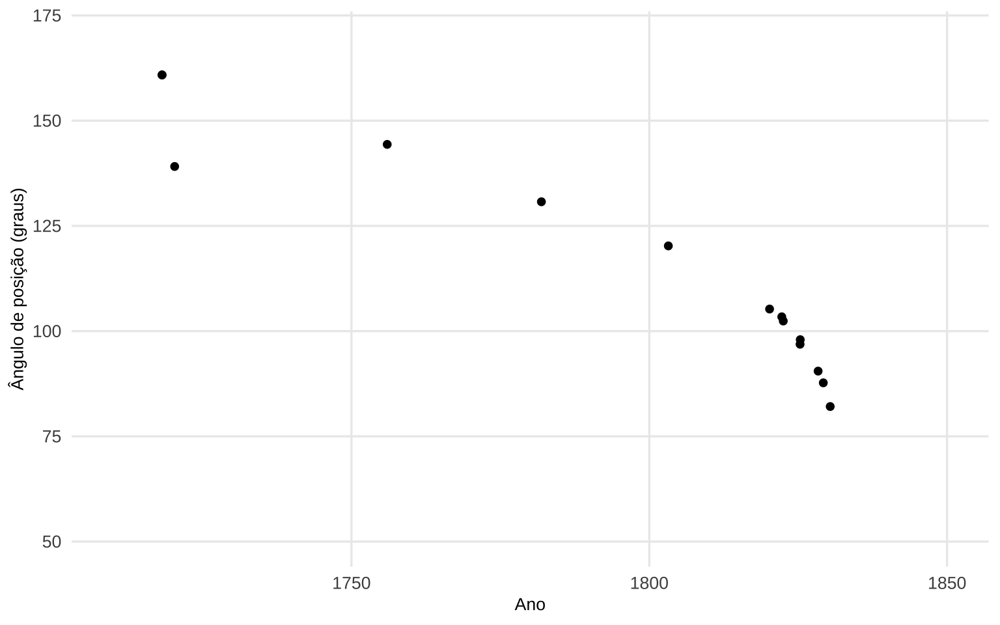
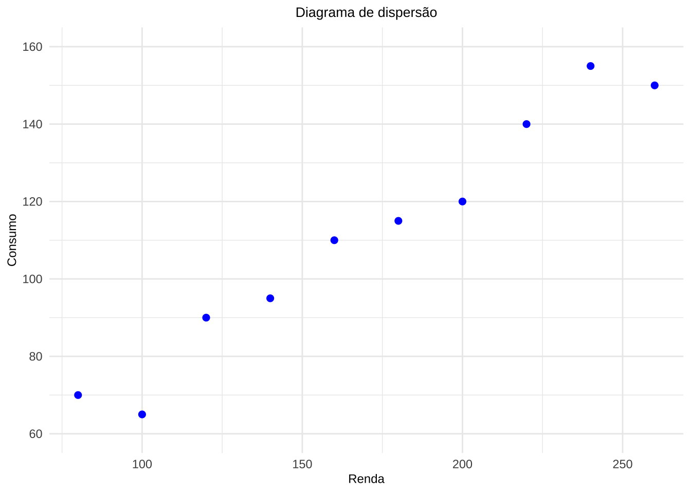
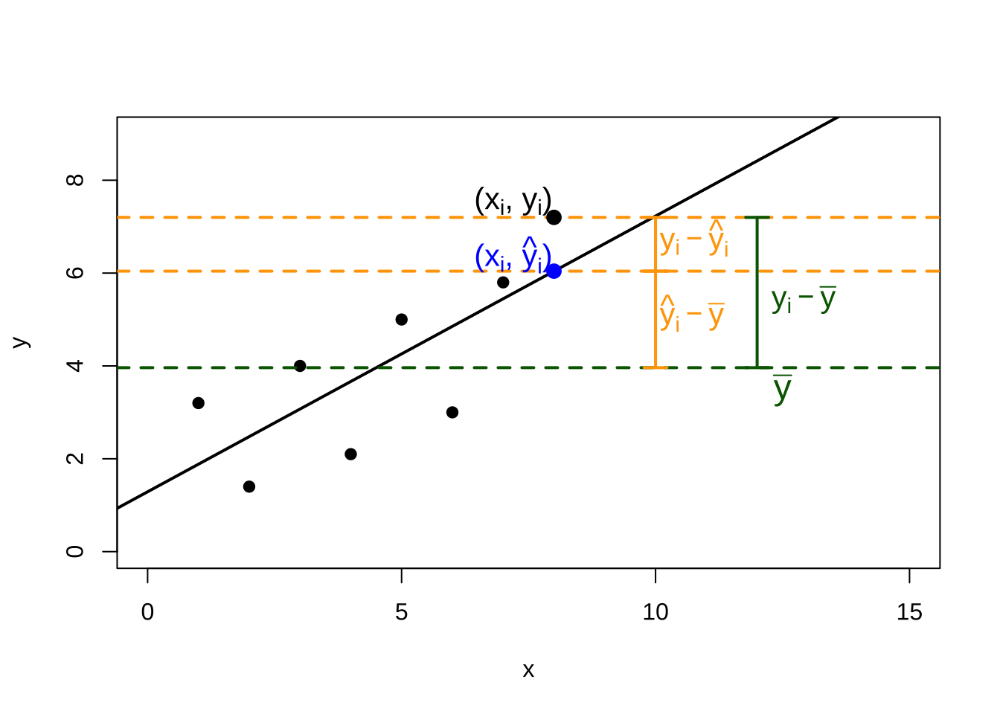
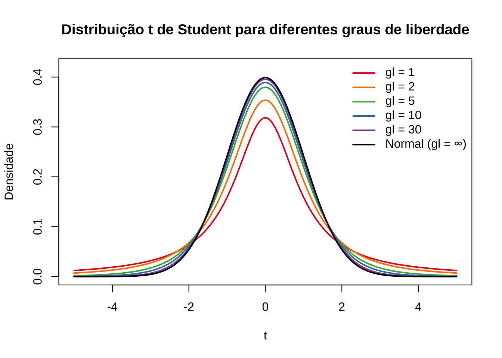

Capítulo 12 Introdução a Medidas de Associação para Variáveis Quantitativas: Correlação Linear de Pearson Estimação e Inferência
De forma análoga a como a média e o desvio padrão resumem, respectivamente, a posição e a dispersão de uma única variável, existem estatísticas descritivas bivariadas que sintetizam em um único valor a existência, a direção e a intensidade da associação linear entre duas variáveis quantitativas.
O estudo conjunto de duas variáveis quantitativas caracteriza uma análise descritiva bidimensional na análise exploratória de dois conjuntos de dados.
12.1 Etimologia
Co (preposição): equivalente a com ou cum, remete a significados como junto ou mutuamente.
Relátio(-ónis): equivalente a relação.
Línea: fio, linha
Correlação linear, portanto, significaria uma relação/associação de dois elementos na forma de uma linha.
12.2 Conceitos (termos) correlatos
12.2.1 Correlação e autocorrelação
- Correlação faz referência à relação existente entre variáveis, digamos X e Y. Essa relação pode assumir diferentes padrões: linear ou não linear.
- Autocorrelação refere-se à correlação dos valores de uma variável consigo mesma observados em diferentes defasagens no tempo (ou distâncias no espaço).
12.2.2 Correlação e regressão
- A análise de correlação linear tem como objetivo medir a força e a direção da associação linear entre duas variáveis, sem distinguir entre variável dependente e independente.
- A análise de regressão linear, por sua vez, tem como objetivo primário expressar a relação entre uma variável dependente e uma ou mais variáveis independentes por meio da estimação de uma função, de modo a possibilitar a obtenção de estimativas para valores não observados, a construção de intervalos de confiança para essas estimativas e o teste de hipóteses sobre os parâmetros do modelo.
12.2.3 Correlação e causação
Embora a análise de correlação trate de algum modo com o comportamento de uma variável em relação a outra(s), isso não implica necessariamente em causação; ie. essa medida estatística não implica no estabelecimento inequívoco de uma relação causal.
Para o estabelecimento de relações causais, é necessário recorrer a considerações teóricas a priori sobre os possíveis mecanismos que governam as variáveis estudadas, uma vez que a correlação, por si só, não é condição suficiente para a inferência causal.
Em Spurious Correlations (2014) Tyler Vigen promoveu uma infinidade de cruzamentos construídos sistematicamente a partir de uma base de 25.237 variáveis publicamente disponiveis com o exclusivo propósito de identificar correlações aleatórias.
O resultado é uma coleção de associações numericamente expressivas quando vemos seus valores apresentados em um diagrama de dispersão:

mas desprovidas de qualquer nexo causal plausível quando apresentamos as variáveis \(A\) e \(B\):
| Variáveis | 2000 | 2001 | 2002 | 2003 | 2004 | 2005 | 2006 | 2007 | 2008 | 2009 |
|---|---|---|---|---|---|---|---|---|---|---|
| A: consumo anual per capita de margarina (lbs.) | 8,2 | 7,0 | 6,5 | 5,3 | 5,2 | 4,0 | 4,6 | 4,5 | 4,2 | 3,7 |
| B: taxa de divórcios no Maine (‰) | 5,0 | 4,7 | 4,6 | 4,4 | 4,3 | 4,1 | 4,2 | 4,2 | 4,2 | 4,1 |
12.2.4 Diagrama de dispersão ( scatterplot )
Introduzidos por Herschel em On the Investigation of the Orbits of revolving Double Stars; being a Supplement to a Paper entitled “Micrometrical Measures of 364 Double Stars (1833)” e popularizados por Francis Galton em Regression Towards Mediocrity in Hereditary Stature (1886), os diagramas de dispersão (scatterplot) são representações gráficas dos valores de duas variáveis.
Um diagrama de dispersão utiliza coordenadas cartesianas para representar observações de duas variáveis em um plano, posicionando cada ponto segundo os valores correspondentes nos eixos horizontal e vertical (Kotu & Deshpande em Data Science (2019)).
O padrão resultante da distribuição dos pontos permite identificar visualmente diferentes aspectos da associação entre duas variáveis como:
- forma,
- direção,
- intensidade,
facilitando a proposição de relações e a escolha de medidas adequadas à quantificação da forma da associação associação.

Figure 12.1: Ângulo de posição em relação ao Norte celeste do sistema binário de estrelas chamado γ Virginis (ou Porrima) em função do ano de observação, para determinação dos elementos orbitais: excentricidade, período, inclinação (Herschel, 1833).
12.2.5 Associações (modelos) estocásticas e determinísticas
Em grego, estocástico deriva de \(\text{στόχος}\) (stókhos), que significa alvo ou tentar adivinhar. A distinção entre associações (modelos) estocásticas e determinísticas pode ser exemplificada tomando-se o crescimento exponencial de bactérias.
Se admitimos que a população cresce a uma taxa fixa de 20% por minuto, um modelo determinístico descreveria esse crescimento como:
\[ y(t) = y_0 \cdot e^{(0{,}20 \cdot t)}. \]
Esse modelo afirma que, transcorridos 15 minutos, 4 bactérias terão crescido para uma população de \(y(15) = 4 \cdot e^{0{,}20 \times 15} \approx 80\) — um valor único e inteiramente determinado pelas condições iniciais.

Entretanto, se tomarmos 10 culturas de 4 bactérias idênticas e contarmos a população após 15 minutos, observaremos uma flutuação aleatória na população final de cada cultura.
Ao contrário do modelo determinístico, que não considera a aleatoriedade (incerteza) presente no processo de reprodução desses organismos, um modelo estocástico admite essa variabilidade.

Esse comportamento — resultados aleatoriamente variados a partir de mesmas condições iniciais — é análogo ao que ocorre quando amostramos repetidamente de uma mesma população.
Ao extrairmos diferentes amostras das variáveis \(X\) e \(Y\), o coeficiente de correlação calculado variará de amostra para amostra: o que obtemos é uma estatística, uma estimativa amostral (\(R\)) do coeficiente de correlação populacional (\(\rho\)).

12.3 Contexto histórico
Em Correlations and their Measurement, chiefly from Anthropometric Data (1888), Galton escreveu:
“[…] Co-relação (sic) ou correlação de estrutura é uma expressão muito usada em biologia, e principalmente naquele ramo que se refere à hereditariedade, e a ideia está ainda mais presente do que a expressão; mas eu não tenho conhecimento de nenhuma tentativa anterior de defini-la claramente, de traçar seu modo de ação em detalhes ou de mostrar como medir seu grau […]”. (tradução livre)
Galton afirmou que as dimensões de dois órgãos são ditos correlacionadas quando a variação de um é acompanhada, na média, pela variação para mais ou menos no outro.
- Se a correlação for próxima (close), então uma pessoa com um braço muito longo geralmente terá uma perna muito longa.
- Se for moderadamente próxima (close), então o comprimento de sua perna seria geralmente apenas longo, não muito longo.
- E, se não houvesse correlação nenhuma, então o comprimento de sua perna será, em média, mediano (mediocre).
Trabalhando com medidas da estatura e do cúbito esquerda de \(n = 348\) homens adultos, para cada variável, Galton estimou os três quartis, definiu o erro provável \(EP=½(Q_3 − Q_1)\) (\(EP=1,75\) e \(EP=0,56\) polegada para as alturas e o cúbito esquerdo, respectivamente) e transformou cada observação fazendo \(x^{'} = (x − Q2) /EP\). Assim, o desvio de cada medida em relação à sua mediana foi expresso em múltiplos do respectivo erro provável.


Em Mathematical contributions to the theory of evolution.—III. Regression, heredity, and panmixia (1896), Pearson desenvolveu a ideia introduzida por Galton, mas relembra que os teoremas fundamentais da correlação (dépendance mutuelle) foram pela primeira vez discutidos (de forma quase exaustiva) por Bravais em Analyse mathématique sur les probabilités des erreurs de situation d’un point (1846).

12.4 Coeficiente de correlação linear de Pearson
O coeficiente de correlação linear (ou coeficiente de correlação produto-momento) de Pearson expressa uma medida da intensidade da associação linear entre duas variáveis quantitativas.
Considerem os diagramas de dispersão simulados de alguns pares de valores das variáveis \(x\) e \(y\), nos quais podemos visualmente identificar a:
- direção da associação: quando ambas as variáveis variam no mesmo sentido (diretamente), ou se variam em sentidos opostos (inversamente);
- forma: se a associação se dá numa forma linear ou não;
- intensidade: se os pontos se mostram pouco ou muito dispersos considerando a forma de associação observada.
sim. 1
A expressão coeficiente de correlação produto-momento tem origem na mecânica estatística do século XIX. Na física, o momento de uma força em relação a um ponto de referência é o produto da magnitude pela distância a esse ponto. Por analogia, Galton e Pearson denominaram momento de ordem \(k\) de uma distribuição o valor: \(\mu_k = \frac{1}{n}\sum_{i=1}^{n}(x_i - \bar{x})^k\).
O momento de ordem 2, por exemplo, corresponde à variância amostral (a menos do fator \(n-1\)). A covariância entre duas variáveis \(x\) e \(y\): \(\frac{1}{n-1}\sum_{i=1}^{n}(x_i - \bar{x})(y_i - \bar{y})\) é um momento cruzado obtido pelo produto dos desvios de duas variáveis distintas em relação às suas respectivas médias — daí a denominação produto-momento. A forma via escores padronizados torna essa estrutura explícita.
O estimador \(r\) para a correlação populacional \(\rho\), definido em termos das amostras extaídas das duas populações das variáveis pode ser escrito na forma de \(z-scores\):
\[ r_{xy} = \frac{1}{(n-1)}\cdot\sum_{i=1}^{n} \left(\frac{x_i - \bar{x}}{s_{x}} \right )\cdot \left(\frac{y_i - \bar{y}}{s_{y}}\right)\\ \]
em que:
- \(x_{i}\): é o iésimo valor observado da variável \(x\);
- \(y_{i}\): é o iésimo valor observado da variável \(y\);
- \(\bar{x}\) e \(\bar{y}\) são os valores médios de \(x\) e \(y\), respectivamente.
- \(s_{x}\) e \(s_{y}\) são os desvios padrão amostrais de \(x\) e \(y\), respectivamente; e,
- \(n\) é o número de pares de valores observados.
A covariância amostral entre \(x\) e \(y\) \(COV_{xy}\) compõe o numerador da expressão da correlação amostral \(r_{xy}\).
\[ COV_{xy} = \frac{1}{(n-1)}\sum_{i=1}^{n} \left(x_i - \bar{x}\right).\left(y_i - \bar{y}\right) \]
A covariância \(COV_{(xy)}\) mede o grau de associação linear entre as variáveis, indicando como elas variam conjuntamente: um valor positivo indica que ambas tendem a crescer ou decrescer juntas; um valor negativo indica que uma cresce enquanto a outra decresce.
Entretanto, como \(COV_{xy} \in (-\infty, +\infty)\) e seu valor depende da escala de medida das variáveis, torna-se difícil julgar se uma covariância é alta ou baixa — o que motiva a padronização pelo produto dos desvios-padrão, dando origem ao coeficiente de correlação \(r_{xy}\).
O denominador \(s_x.s_y\) (desvios padrão amostrais) realiza essa padronização do valor da covariância amostral, tornando-o adimensional, comparável entre diferentes conjuntos e restrito ao intervalo \([-1,1]\).
\[ \begin{aligned} r_{xy} & = \frac{COV_{(xy)}}{s_x \cdot s_y}\\ r_{xy} & = \frac{1}{(n-1)} \cdot \frac{1}{s_x \cdot s_y}\sum_{i=1}^{n} \left(x_i - \bar{x}\right).\left(y_i - \bar{y}\right)\\ r_{xy} & = \frac{1}{(n-1)}\cdot \sum_{i=1}^{n} \left(z_{x_i}\cdot z_{y_i}\right)\\ \end{aligned} \]
Observações:
\(r\) é adimensional pois a correlação linear de Pearson é uma métrica padronizada: \(-1 \le r \le 1\);
a correlação linear observada entre \(x\) e \(y\) é simétrica: \(r_{xy}=r_{yx}\);
mede apenas a associação linear entre \(x\) e \(y\) e, portanto, não é adequado interpretá-lo como medida geral de associação quando o padrão dominante é não linear;
o coeficiente de correlação mede apenas a intensidade da relação linear entre \(x\) e \(y\) e não estabelece per se nenhuma relação de causação;
- se \(r \approx 0\), não há evidência de associação linear entre as variáveis na amostra observada. Neste caso, variações em uma variável não estão linearmente associadas a variações sistemáticas na outra.
se \(r \neq 0\), há evidência de relação linear entre \(x\) e \(y\), cuja direção e intensidade são determinadas pelo sinal e magnitude de \(r\):
- quando \(r > 0\), a relação linear é positiva: incrementos em uma variável tendem a ser acompanhados por incrementos na outra, e decréscimos em uma variável tendem a ser acompanhados por decréscimos na outra;
- quando \(r < 0\), a relação linear é negativa: incrementos em uma variável tendem a ser acompanhados por decréscimos na outra, e vice-versa.
- quando \(r > 0\), a relação linear é positiva: incrementos em uma variável tendem a ser acompanhados por incrementos na outra, e decréscimos em uma variável tendem a ser acompanhados por decréscimos na outra;
Aquela definição pode ser reescrita na forma por desvios das médias:
\[ r_{xy} = \frac{\sum_{i=1}^{n}(x_i - \bar{x})\cdot(y_i - \bar{y})}{\sqrt{\sum_{i=1}^{n}(x_i - \bar{x})^2} \cdot \sqrt{\sum_{i=1}^{n}(y_i - \bar{y})^2}}, \]
e, equivalentemente, na forma por somas brutas:
\[ r_{xy} = \frac{\sum _{i=1}^{n}{x}_{i} \cdot {y}_{i} - \frac{\left(\sum _{i=1}^{n}{x}_{i}\right)\cdot\left(\sum _{i=1}^{n}{y}_{i}\right)}{n}}{\sqrt{\left[\sum _{i=1}^{n}{x}_{i}^{2}-\frac{{\left(\sum _{i=1}^{n}{x}_{i}\right)}^{2}}{n}\right]} \cdot \sqrt{\left[\sum_{i=1}^{n}{y}_{i}^{2}-\frac{{\left(\sum _{i=1}^{n}{y}_{i}\right)}^{2}}{n}\right]}}, \]
ou ainda como:
\[ r_{xy} = \frac{n\sum x_i y_i - \left(\sum x_i\right) \cdot\left(\sum y_i\right)}{\sqrt{n\sum x_i^2 - \left(\sum x_i\right)^2} \cdot \sqrt{n\sum y_i^2 - \left(\sum y_i\right)^2}} \]
Ou ainda, simplificadamente, numa forma compacta:
\[ r_{xy} = \frac{{S}_{xy}}{\sqrt{{S}_{xx}\cdot {S}_{yy}}} \]
em que:
\[ S_{xy} = \sum _{i=1}^{n} x_{i}\cdot y_{i} - \frac{\sum _{i=1}^{n}x_{i}\cdot\sum _{i=1}^{n}y_{i}}{n}, \]
\[ S_{xx} = \sum _{i=1}^{n} x_{i}^{2} - \frac{(\sum _{i=1}^{n} x_{i})^{2}}{n}, \quad {S}_{yy}=\sum _{i=1}^{n}y_{i}^{2} - \frac{(\sum _{i=1}^{n} y_{i})^{2}}{n}. \]
Exemplo 1: Dados fictícios de consumo e renda foram coletados para dez indivíduos. Deseja-se estudar a associação entre a renda mensal e o consumo mensal, ambos expressos em unidades monetárias. Construa o diagrama de dispersão, discorra sobre a forma e direção da associação visualmente observada e quantifique a intensidade dessa associação por meio do coeficiente de correlação linear de Pearson.
| Indivíduo | Renda (X) | Consumo (Y) |
|---|---|---|
| A | 80 | 70 |
| B | 100 | 65 |
| C | 120 | 90 |
| D | 140 | 95 |
| E | 160 | 110 |
| F | 180 | 115 |
| G | 200 | 120 |
| H | 220 | 140 |
| I | 240 | 155 |
| J | 260 | 150 |

Figure 12.2: Renda mensal pelo consumo mensal para dez indivíduos (dados fictícios).
Empregando a expressão 1: escores z
| Quadro auxiliar para cálculo de r pela forma dos escores padronizados | |||||||
|---|---|---|---|---|---|---|---|
| Indivíduo | xi | yi | xi − x̄ | yi − ȳ | zxi | zyi | zxi ⋅ zyi |
| A | 80 | 70 | |||||
| B | 100 | 65 | |||||
| C | 120 | 90 | |||||
| D | 140 | 95 | |||||
| E | 160 | 110 | |||||
| F | 180 | 115 | |||||
| G | 200 | 120 | |||||
| H | 220 | 140 | |||||
| I | 240 | 155 | |||||
| J | 260 | 150 | |||||
| Total | 1700 | 1110 | |||||
Fórmulas:
\[ \bar{x} = \frac{\sum x_{i}}{n} \text{, } \bar{y}= \frac{\sum y_{i} }{n} \text{, } s_x = \sqrt{\frac{\sum(x_i - \bar{x})^2}{n-1}} \text{, e } s_y = \sqrt{\frac{\sum(y_i - \bar{y})^2}{n-1}} \]
\[ z_{x_i} = \frac{(x_i - \bar{x})}{s_x} \text{, } z_{y_i} = \frac{(y_i - \bar{y})}{s_y} \text{, e } r = \frac{1}{(n-1)}\sum_{i=1}^{n} z_{x_i} \cdot z_{y_i} \]
Calculando-se antecipadamente \(\bar{x} = 170\), \(\bar{y} = 111\), \(s_{x} = 60{,}5530\) e \(s_{y} = 31{,}4290\) (\(n = 10\)):
| Quadro auxiliar para cálculo de r pela forma dos escores padronizados | |||||||
|---|---|---|---|---|---|---|---|
| Indivíduo | xi | yi | xi − x̄ | yi − ȳ | zxi | zyi | zxi ⋅ zyi |
| A | 80 | 70 | −90 | −41 | −1, 4863 | −1, 3045 | 1, 9387 |
| B | 100 | 65 | −70 | −46 | −1, 1560 | −1, 4637 | 1, 6920 |
| C | 120 | 90 | −50 | −21 | −0, 8257 | −0, 6683 | 0, 5519 |
| D | 140 | 95 | −30 | −16 | −0, 4954 | −0, 5091 | 0, 2522 |
| E | 160 | 110 | −10 | −1 | −0, 1651 | −0, 0318 | 0, 0053 |
| F | 180 | 115 | 10 | 4 | 0, 1651 | 0, 1273 | 0, 0210 |
| G | 200 | 120 | 30 | 9 | 0, 4954 | 0, 2864 | 0, 1419 |
| H | 220 | 140 | 50 | 29 | 0, 8257 | 0, 9227 | 0, 7618 |
| I | 240 | 155 | 70 | 44 | 1, 1560 | 1, 4000 | 1, 6183 |
| J | 260 | 150 | 90 | 39 | 1, 4863 | 1, 2409 | 1, 8441 |
| Total | 1700 | 1110 | 0 | 0 | 8, 8272 | ||
Portanto,
\[ r_{xy} = \frac{1}{(n-1)}\sum_{i=1}^{n} z_{x_i} \cdot z_{y_i} = \frac{8{,}8272}{9} \approx 0{,}9808 \]
Empregando a expressão 2: desvios em relação à média
| Quadro auxiliar para cálculo de r pela forma dos desvios | |||||||
|---|---|---|---|---|---|---|---|
| Indivíduo | xi | yi | xi − x̄ | yi − ȳ | (xi − x̄)(yi − ȳ) | (xi − x̄)2 | (yi − ȳ)2 |
| A | 80 | 70 | |||||
| B | 100 | 65 | |||||
| C | 120 | 90 | |||||
| D | 140 | 95 | |||||
| E | 160 | 110 | |||||
| F | 180 | 115 | |||||
| G | 200 | 120 | |||||
| H | 220 | 140 | |||||
| I | 240 | 155 | |||||
| J | 260 | 150 | |||||
| Total | 1700 | 1110 | |||||
Fórmula:
\[ r_{xy} = \frac{\sum_{i=1}^{n}(x_i - \bar{x})(y_i - \bar{y})}{\sqrt{\sum_{i=1}^{n}(x_i - \bar{x})^2 \cdot \sum_{i=1}^{n}(y_i - \bar{y})^2}} \]
| Quadro auxiliar para cálculo de r pela forma dos desvios | |||||||
|---|---|---|---|---|---|---|---|
| Indivíduo | xi | yi | xi − x̄ | yi − ȳ | (xi − x̄)(yi − ȳ) | (xi − x̄)2 | (yi − ȳ)2 |
| A | 80 | 70 | −90 | −41 | 3.690 | 8.100 | 1.681 |
| B | 100 | 65 | −70 | −46 | 3.220 | 4.900 | 2.116 |
| C | 120 | 90 | −50 | −21 | 1.050 | 2.500 | 441 |
| D | 140 | 95 | −30 | −16 | 480 | 900 | 256 |
| E | 160 | 110 | −10 | −1 | 10 | 100 | 1 |
| F | 180 | 115 | 10 | 4 | 40 | 100 | 16 |
| G | 200 | 120 | 30 | 9 | 270 | 900 | 81 |
| H | 220 | 140 | 50 | 29 | 1.450 | 2.500 | 841 |
| I | 240 | 155 | 70 | 44 | 3.080 | 4.900 | 1.936 |
| J | 260 | 150 | 90 | 39 | 3.510 | 8.100 | 1.521 |
| Total | 1700 | 1110 | 0 | 0 | 16.800 | 33.000 | 8.890 |
Portanto,
\[ r_{xy} = \frac{\sum_{i=1}^{n}(x_i - \bar{x})(y_i - \bar{y})}{\sqrt{\sum_{i=1}^{n}(x_i - \bar{x})^2 \cdot \sum_{i=1}^{n}(y_i - \bar{y})^2}} \\ \]
\[ r_{xy} = \frac{16{.}800}{\sqrt{33{.}000 \cdot 8{.}890}} = \frac{16{.}800}{\sqrt{293{.}370{.}000}} = \frac{16{.}800}{17{.}128{,}63} \approx 0{,}9808 \]
Empregando a expressão 3: somas brutas
| Quadro auxiliar para cálculo de r pela forma das somas brutas | |||||
|---|---|---|---|---|---|
| Indivíduo | xi | yi | xiyi | xi2 | yi2 |
| A | 80 | 70 | |||
| B | 100 | 65 | |||
| C | 120 | 90 | |||
| D | 140 | 95 | |||
| E | 160 | 110 | |||
| F | 180 | 115 | |||
| G | 200 | 120 | |||
| H | 220 | 140 | |||
| I | 240 | 155 | |||
| J | 260 | 150 | |||
| Totais | |||||
Fórmulas:
\[ r_{xy} = \frac{S_{xy}}{\sqrt{S_{xx} \cdot S_{yy}}} \]
\[ S_{xy} = \sum_{i=1}^{n} x_i y_i - \frac{\sum_{i=1}^{n} x_i \cdot \sum_{i=1}^{n} y_i}{n} \]
\[ S_{xx} = \sum_{i=1}^{n} x_i^2 - \frac{\left(\sum_{i=1}^{n} x_i\right)^2}{n}, \quad S_{yy} = \sum_{i=1}^{n} y_i^2 - \frac{\left(\sum_{i=1}^{n} y_i\right)^2}{n} \]
| Quadro auxiliar para cálculo de r pela forma das somas brutas | |||||
|---|---|---|---|---|---|
| Indivíduo | xi | yi | xiyi | xi2 | yi2 |
| A | 80 | 70 | 5600 | 6400 | 4900 |
| B | 100 | 65 | 6500 | 10000 | 4225 |
| C | 120 | 90 | 10800 | 14400 | 8100 |
| D | 140 | 95 | 13300 | 19600 | 9025 |
| E | 160 | 110 | 17600 | 25600 | 12100 |
| F | 180 | 115 | 20700 | 32400 | 13225 |
| G | 200 | 120 | 24000 | 40000 | 14400 |
| H | 220 | 140 | 30800 | 48400 | 19600 |
| I | 240 | 155 | 37200 | 57600 | 24025 |
| J | 260 | 150 | 39000 | 67600 | 22500 |
| Totais | 1700 | 1110 | 205500 | 322000 | 132100 |
\[ \begin{aligned} S_{xy} & = \sum_{i=1}^{n} x_i y_i - \frac{\sum_{i=1}^{n} x_i \cdot \sum_{i=1}^{n} y_i}{n} \\ & = 205500 - \frac{1700 \cdot 1110}{10} = 205500 - 188{.}700 = 16{.}800 \end{aligned} \]
\[ \begin{aligned} S_{xx} & = \sum_{i=1}^{n} x_i^2 - \frac{\left(\sum_{i=1}^{n} x_i\right)^2}{n} \\ &= 322000 - \frac{1700^2}{10} = 322000 - 289{.}000 = 33{.}000 \end{aligned} \]
\[ \begin{aligned} S_{yy} & = \sum_{i=1}^{n} y_i^2 - \frac{\left(\sum_{i=1}^{n} y_i\right)^2}{n} \\ & = 132100 - \frac{1110^2}{10} = 132100 - 123{.}210 = 8{.}890 \end{aligned} \]
Portanto:
\[ \begin{aligned} r_{xy} & = \frac{S_{xy}}{\sqrt{S_{xx} \cdot S_{yy}}} \\ & = \frac{16{.}800}{\sqrt{33{.}000 \cdot 8{.}890}} \\ & = \frac{16{.}800}{\sqrt{293{.}370{.}000}} \\ & = \frac{16{.}800}{17{.}128{,}63} \approx 0{,}9808 \end{aligned} \]
A implementação em R pode ser feita do seguinte modo:
rend <- c(80, 100, 120, 140, 160, 180, 200, 220, 240, 260)
cons <- c(70, 65, 90, 95, 110, 115, 120, 140, 155, 150)
z_rend <- (rend - mean(rend)) / sd(rend)
z_cons <- (cons - mean(cons)) / sd(cons)
r_zscores <- sum(z_rend * z_cons) / 9
r_desvios <- sum((rend - mean(rend)) * (cons - mean(cons))) / sqrt(sum((rend - mean(rend))^2) * sum((cons - mean(cons))^2))
r_somas <- (sum(rend * cons) - (sum(rend) * sum(cons)) / 10) / sqrt((sum(rend^2) - ((sum(rend))^2) / 10) * (sum(cons^2) - ((sum(cons))^2) / 10))print(paste("O coef. de cor. linear de Pearson usando a forma dos escores padronizados é", round(r_zscores, 14)))-> [1] "O coef. de cor. linear de Pearson usando a forma dos escores padronizados é 0.98084736859858"print(paste("O coef. de cor. linear de Pearson usando a forma dos desvios é", round(r_desvios, 14)))-> [1] "O coef. de cor. linear de Pearson usando a forma dos desvios é 0.98084736859858"print(paste("O coef. de cor. linear de Pearson usando a forma das somas brutas é", round(r_somas, 14)))-> [1] "O coef. de cor. linear de Pearson usando a forma das somas brutas é 0.98084736859858"print(paste("O coef. de cor. linear de Pearson usando a função em R: cor(x=rend, y=cons, method='pearson') é", round(cor(rend, cons, method = "pearson"), 14)))-> [1] "O coef. de cor. linear de Pearson usando a função em R: cor(x=rend, y=cons, method='pearson') é 0.98084736859858"O cálculo do coeficiente da correlação linear assemelha-se a uma análise de variância:

Vejamos:
\[ y_i - \stackrel{-}{y} = (\hat{y_i} - \stackrel{-}{y}) + (y_i - \hat{y_i}). \]
Elevando-se ao quadrado ambos os termos, para todos os valores observados, teremos:
\[ \sum _{i=1}^{n} ({y_{i}} - \stackrel{-}{y})^{2} = \sum _{i=1}^{n} (\hat{y_{i}} - \stackrel{-}{y})^{2} + \sum _{i=1}^{n} (y_{i} - \hat{y_{i}})^{2} \]
A quantidade à esquerda mede a variação total dos y: SQTotal (soma total de quadrados). As quantidades à direita são a SQReg (soma de quadrados da regressão) e a SQRes (soma de quadrados dos resíduos).
A definição abaixo exprime a fração da variação total dos \(y\) que está sendo explicada por sua regressão linear com \(x\):
\[
R^{2}=\frac{\sum _{i=1}^{n} (\hat{y_{i}} - \stackrel{-}{y})^{2}}{\sum _{i=1}^{n} ({y_{i}} - \stackrel{-}{y})^{2}}\\
R^{2}=\frac{\text{variação explicada}}{\text{variação total}}
\]
é conhecida como coeficiente de determinação (\(R^{2}\)) e indica a proporção da variabilidade presente em \(Y\) que é explicada pela variação de \(X\) por meio da regressão de \(y\) por \(x\).
12.5 Inferências sobre \(\rho\)
12.5.1 Teste de hipóteses para a correlação linear populacional (\(\rho\))
O coeficiente \(r_{xy}\) obtido a partir das amostras é uma estimativa do parâmetro populacional \(\rho\), uma estatística amostral, sujeita a variação: amostras diferentes extraídas da mesma população produzirão valores diferentes de \(r\).
Dessa forma, um valor de \(r\) afastado de zero não implica necessariamente que exista correlação na população — pode ser apenas resultado aleatório da variabilidade amostral.
Uma inferência essencial consiste em testar a existência de correlação linear entre as variáveis na população. Para avaliar se a correlação observada é estatisticamente significativa, realiza-se um teste de hipóteses sobre o parâmetro populacional \(\rho\).
12.5.1.1 Teste de hipóteses para \(\rho = \rho_0\), com \(\rho_0=0\)
O teste acima assume uma estrutura bilateral:
\[ \begin{cases} H_{0}:\rho =0 \hspace{0.1cm} \text{, ie. a correlação linear entre x e y é nula} \\ H_{1}:\rho \ne 0 \hspace{0.1cm} \text{, ie. a correlação linear entre x e y não é nula} \\ \end{cases} \]
Sendo \(r\) uma variável aleatória, sua distribuição amostral, sob \(H_0\), é aproximada pela distribuição \(t\) de Student com \((n-2)\) graus de liberdade.
Assim, a a estatística de teste é dada por:
\[ {t}_{calc}=\frac{r\cdot\sqrt{n-2}}{\sqrt{1-{r}^{2}}}; \quad T \sim t_{(n-2)}. \]
Sendo o erro padrão do coeficiente de correlação linear de Pearson dado por:
\[ EP_{(r)} = \sqrt{\frac{1 - r^2}{n - 2}}, \]
a expressão anterior é equivalente a:
\[ {t}_{calc}=r\frac{1}{EP_{(r)}}; \quad T \sim t_{(n-2)}. \]
A regra de decisão é geral para qualquer teste de hipóteses:
\[ p\text{-value} < \alpha \Rightarrow \text{rejeita-se } H_0 \]
\[ p\text{-value} \geq \alpha \Rightarrow \text{não se rejeita } H_0 \]
O \(p\)-value é a probabilidade de se obter uma estatística de teste tão ou mais extrema que a observada, assumindo-se \(H_0\) verdadeira. Quando essa probabilidade é menor que o nível de significância \(\alpha\) fixado para teste, a evidência contra \(H_0\) é considerada suficiente para rejeitá-la.
Equivalente a se analisar pelo valor da estatística do teste, rejeita-se a hipótese nula (sob \(H_{0}:\rho = 0 \hspace{0.1cm}\)) se o valor da estatística calculada \(t_{calc}\) for tão extremo que se verifique:
\[ t_{calc} \le {t}_{tab[\frac{\alpha }{2};\left(n-2\right)]}\\ \text{ou}\\ t_{calc} \ge {t}_{tab[1-\frac{\alpha }{2};\left(n-2\right)]}\\ \]
equivalente a se verificar se \(|t_{calc}| \ge {t}_{tab\left[1-\frac{\alpha}{2};\left(n-2\right)\right]}\), em que \(t_{tab}\) é o quantil associado na distribuição “t” de Student ao nível de significância pretendido (\(\alpha\)) com \((n-2)\) graus de liberdade.
Observações:
Para que o resultado do teste seja exato, a distribuição bivariada \((x,y)\) deve seguir uma distribuição Normal bivariada. No entanto, o teste é razoavelmente robusto a violações deste pressuposto quando o tamanho amostral é grande (\(n>30\)).
Para amostras pequenas (ou quando há forte evidência de não-normalidade) alternativas não-paramétricas como o coeficiente de correlação de Spearman devem ser consideradas.
- As curvas da família “t” possuem simetria em relação a um eixo vertical passando pelo valor \(t\) de máxima densidade. O número de graus de liberdade (\(n-2\)) irá determinar qual curva da família dessa distribuição será utilizada, por essa razão, as tabelas apresentam-se individualizadas por nível de significância e graus de liberdade.

Os valores tabelados dessa estatística acham-se associados às áreas por eles delimitadas sob a curva (função densidade de probabilidade: a totalidade da área sob essa curva é igual a 1)
Sendo simétrica, um valor “t” para uma nível de significância \(\alpha\) qualquer será igual, em módulo, ao valor “t” no outro extremo da curva.
Por essa razão muitas tabelas apresentam valores dessa estatística sob os títulos de monocaudal ou bicaudal pois estão apresentando os valores para um determinado nível de significância (\(\alpha\)): área sob a curva, situado apenas em um lado (ou subdividido nos dois ramos da curva nas tabelas chamadas “bilaterais”).
O teste de hipótese proposto é um teste bilateral; assim, o gráfico apropriado para se decidir pela rejeição ou não da hipótese nula assume a forma mostrada nessa simulação.
(sim2 t)
Exemplo 2: Faça o teste de hipóteses para a correlação linear \(\rho\) a partir da correlação amostral \(r\) calculada com os dados de consumo e renda, sob um nível de significância (\(\alpha\)) de 0,05.
\[ \begin{cases} H_{0}:\rho =0 \hspace{0.1cm} \text{, ie. a correlação linear entre x e y é nula} \\ H_{1}:\rho \ne 0 \hspace{0.1cm} \text{, ie. a correlação linear entre x e y não é nula} \\ \end{cases} \]
Rejeitaremos a hipótese nula (\(H_{0}\)) se:
\[
\begin{aligned}
t_{calc} & \le {t}_{tab[\frac{\alpha }{2};\left(n-2\right)]}\\
& \text{ou}\\
t_{calc} & \ge {t}_{tab[1-\frac{\alpha }{2};\left(n-2\right)]}
\end{aligned}
\]
A normalidade marginal de cada variável pode ser verificada graficamente por meio dos gráficos QQ.
A implementação em R pode ser feito do modo que se segue:
# Dados do exemplo
dados <- data.frame(
rend = c(80, 100, 120, 140, 160, 180, 200, 220, 240, 260),
cons = c(70, 65, 90, 95, 110, 115, 120, 140, 155, 150)
)par(mfrow = c(1, 2))
qqnorm(dados$rend, main = "QQ plot renda\ncom n=10, a interpretação é limitada,\nmas os pontos devem aproximar-se\nda linha teórica", pch = 16, cex.main=0.8)
qqline(dados$rend, col = "red", lwd = 2)
qqnorm(dados$cons, main = "QQ plot consumo\ncom n=10, a interpretação é limitada,\nmas os pontos devem aproximar-se\nda linha teórica", pch = 16, cex.main=0.8)
qqline(dados$cons, col = "red", lwd = 2)
No exercício referido obtivemos um valor para a correlação linear de Pearson de \(r=0,9808\). A partir desse valor podemos calcular o valor de nossa estatística \({t}_{calc}\) para o teste:
\[ {t}_{calc}=\frac{r\cdot\sqrt{n-2}}{\sqrt{1-{r}^{2}}} = 14{,}2341 \]
Da tabela extraímos o valor de nossa estatística de comparação a um nível de significância \(\alpha=5\%\) e, para um tamanho amostral \(n=10\), temos como graus de liberdade \(n-2=8\) (\(t_{tab}=2,306\)).
A implementação em R pode ser feita do seguinte modo:
-> [1] -2.306-> [1] 2.306-> [1] "Os valores críticos tabelados para alfa = 0.05 e n-2 = 8 graus de liberdade são: -2.306 e 2.306"Vê-se que o valor calculado da estatística “t” encontra-se além dos limites estabelecidos pela estatística de comparação (\(t_{tab}\)) para um nível de significância de \(\alpha=5\%\). (sim2 t)
A implementação em R pode ser feita do seguinte modo:
rend <- c(80, 100, 120, 140, 160, 180, 200, 220, 240, 260)
cons <- c(70, 65, 90, 95, 110, 115, 120, 140, 155, 150)
# Teste usando função nativa do R (para comparação)
teste <- cor.test(rend, cons)
print(teste)->
-> Pearson's product-moment correlation
->
-> data: rend and cons
-> t = 14, df = 8, p-value = 6e-07
-> alternative hypothesis: true correlation is not equal to 0
-> 95 percent confidence interval:
-> 0.9184 0.9956
-> sample estimates:
-> cor
-> 0.9808(sim2 t)
12.5.1.2 Teste de hipóteses para \(\rho = \rho_0\), com \(\rho_0\neq 0\)
Para se testar a hipótese \(\rho = \rho_0\) com \(\rho_0 \neq 0\)
\[ \begin{cases} H_{0}:\rho = \rho_{0} \hspace{0.1cm} \text{, ie. a correlação linear entre X e Y é igual a }\rho_{0} \\ H_{1}:\rho \ne \rho_{0} \hspace{0.1cm} \text{, ie. a correlação linear entre X e Y é diferente de }\rho_{0} \\ \end{cases} \]
utilizamos a estatística \(z\) (zeta) de Fisher
\[ z_r= \frac{1}{2}\cdot\ln\frac{(1+r)}{(1-r)}. \]
Essa estatística possui uma distribuição aproximadamente Normal, com média \(\mu_{z}\)
\[ \mu_{z} = \frac{1}{2}\cdot\ln\frac{(1+\rho_{0})}{(1-\rho_{0})}\\ \]
e desvio padrão \(\sigma_{z}\)
\[ \sigma_{z} = \frac{1}{\sqrt{n-3}} \]
Transformando-se \(z\) em unidades padrão a estatística do teste é
\[ z_{calc} = \frac{z_r - \mu_{z}}{\sigma_{z}} \]
que, sob \(H_0: \rho = \rho_0 \neq 0\), segue aproximadamente uma distribuição Normal padrão \(N(0,1)\).
Exemplo 3: Teste o valor \(\rho=\rho_{0}=0{,}95\) por meio de um teste de hipóteses a partir da correlação amostral \(r\) calculada com os dados de consumo e renda, sob um nível de significância (\(\alpha\)) de \(0{,}05\).
\[ \begin{cases} H_{0}:\rho = 0{,}95 \text{, i.e., a correlação linear entre x e y é igual a } 0{,}95 \\ H_{1}:\rho \neq 0{,}95 \text{, i.e., a correlação linear entre x e y é diferente de } 0{,}95 \end{cases} \]
Rejeitaremos a hipótese nula (\(H_{0}\)) se:
\[ \begin{aligned} z_{calc} & \le {z}_{tab[\frac{\alpha }{2})]} \\ & \text{ou} \\ z_{calc} & \ge {z}_{tab[1-\frac{\alpha }{2})]} \end{aligned} \]
\[ Z = \frac{1}{2}\cdot \ln\frac{(1+r)}{(1-r)} = \frac{1}{2}\cdot\ln\frac{(1+0{,}9808)}{(1-0{,}9808)} \approx 2{,}3182 \]
\[ \mu_{z} = \frac{1}{2}\cdot\ln\frac{(1+\rho_0)}{(1-\rho_0)} = \frac{1}{2}\ln\frac{(1+0{,}95)}{(1-0{,}95)} \approx 1{,}8318 \]
\[ \sigma_{z} = \frac{1}{\sqrt{n-3}} = \frac{1}{\sqrt{10-3}} \approx 0{,}3780 \]
Estatística do teste:
\[ z_{calc} = \frac{z - \mu_{z}}{\sigma_{z}} = \frac{2{,}3182 - 1{,}8318}{0{,}3780} = \frac{0{,}4864}{0{,}3780} \approx 1{,}2869 \]
Para \(\alpha = 0{,}05\) bilateral, o valor crítico é \(z_{\alpha/2} = \pm 1{,}96\). Como \(|z_{calc}| = 1{,}2869 < 1{,}96\), não se rejeita \(H_0\) ao nível de significância de \(5\%\). Os dados não fornecem evidência suficiente para afirmar que a correlação linear populacional é diferente de \(0{,}95\).
A implementação em R pode ser feita do seguinte modo:
r <- 0.9808
rho0 <- 0.95
n <- 10
Z <- 0.5 * log((1 + r) / (1 - r))
mu_z <- 0.5 * log((1 + rho0) / (1 - rho0))
sigma_z <- 1 / sqrt(n - 3)
z_calc <- (Z - mu_z) / sigma_z
p_valor <- 2 * (1 - pnorm(abs(z_calc)))-> Z = 2.318-> mu_z = 1.832-> sigma_z = 0.378-> z_calc = 1.287-> p-valor = 0.1981(sim2 Z)
12.5.1.3 Intervalo de confiança para \(\rho\)
Um intervalo de confiança sob nível de confiança \((1-\alpha)\) para \(\rho\) pode ser construído via transformação \(Z\) de Fisher
\[ z_r = \frac{1}{2}\cdot\ln\left(\frac{1+r}{1-r}\right). \]
Sendo o erro padrão \(EP(z_r) = \frac{1}{\sqrt{n-3}}\), o intervalo na escala \(Z\) é
\[ L_{inf} = z_r - z_{\alpha/2} \cdot EP(z_r), \qquad L_{sup} = z_r + z_{\alpha/2} \cdot EP(z_r) \]
Como os limites do intervalo de confiança para \(\rho\): \(L_{inf},L_{sup}\in (-\infty,\infty)\) são então transformados de volta à escala natural (\([-1,1]\)) pela inversa:
\[ \rho_{inf} = \frac{e^{(2 \cdot L_{inf})} - 1}{e^{(2\cdot L_{inf})} + 1}, \qquad \rho_{sup} = \frac{e^{(2\cdot L_{sup})} - 1}{e^{(2\cdot L_{sup})} + 1} \]
Os limites \(\rho_{inf}\) e \(\rho_{sup}\) definem um intervalo assimétrico em torno de \(r\), o que é esperado, pois a distribuição amostral de \(r\) é assimétrica quando \(\rho \neq 0\). A transformação de Fisher corrige essa assimetria na escala \(z_r\), onde a aproximação Normal é válida, e a transformação inversa a reintroduz de forma apropriada na escala original.
Exemplo 4: Construa um intervalo de confiança para \(\rho\) com \((1-\alpha)=0,95\) a partir da correlação amostral \(r\) calculada com os dados de consumo e renda.
No exemplo que estamos trabalhando calculamos \(r = 0,9808\) com \(n = 10\). Fazendo a transformação de Fisher
\[ z_r = \frac{1}{2}\cdot \ln\!\left(\frac{1+r}{1-r}\right) = \\ z_r = \frac{1}{2}\cdot \ln\!\left(\frac{1,9808}{0,0192}\right) \approx 2{,}3182 \]
Calculando-se o erro padrão \(EP(z_r)\)
\[ EP(z_r) = \frac{1}{\sqrt{n-3}} = \frac{1}{\sqrt{7}} = \frac{1}{2{,}6458} \approx 0{,}3780 \]
Calculando-se o limite inferior
\[ L_{inf} = z_r - z_{\alpha/2} \cdot EP(z_r) \\ L_{inf} = 2{,}3182 - 1{,}96 \cdot 0{,}3780 \\ L_{inf} = 1{,}5773 \]
Calculando-se o limite superior
\[ L_{sup} = z_r + z_{\alpha/2} \cdot EP(z_r)\\ L_{sup} = 2{,}3182 + 1{,}96 \cdot 0{,}3780 \\ L_{sup} = 3{,}0591 \]
Os limites do intervalo de confiança para \(\rho\): \(L_{inf},L_{sup}\in (-\infty,\infty)\) são então transformados de volta à escala natural (\([-1,1]\)) pelas inversas:
\[ \begin{aligned} \rho_{inf} & = \frac{e^{(2\cdot L_{inf})} - 1}{e^{(2\cdot L_{inf})} + 1} \\ \rho_{inf} & = \frac{e^{(2 \cdot 1{,}5773)}-1}{e^{(2 \cdot1{,}5773)}+1} \approx 0{,}9182 \end{aligned} \]
\[ \begin{aligned} \rho_{sup} & = \frac{e^{(2 \cdot L_{sup})} - 1}{e^{(2 \cdot L_{sup)}} + 1}\\ \rho_{sup} & = \frac{e^{(2 \cdot 3{,}0591)}-1}{e^{(2 \cdot 3{,}0591)}+1} \approx 0{,}9956 \end{aligned} \]
Temos 95% de confiança de que o valor da correlação linear na população encontra-se no intervalo
\[ IC(\rho)_{95\%}: \quad (0{,}9182 \;;\; 0{,}9956) \]
Os limites \(\rho_{inf}\) e \(\rho_{sup}\) definem um intervalo assimétrico em torno de \(r\), o que é esperado, pois a distribuição amostral de \(r\) é assimétrica quando \(\rho \neq 0\). A transformação de Fisher corrige essa assimetria na escala \(z_r\), onde a aproximação Normal é válida, e a transformação inversa a reintroduz de forma apropriada na escala original.
A implementação em R pode ser feita do modo que se segue:
rend <- c(80, 100, 120, 140, 160, 180, 200, 220, 240, 260)
cons <- c(70, 65, 90, 95, 110, 115, 120, 140, 155, 150)
cor.test(rend, cons, conf.level = 0.95)->
-> Pearson's product-moment correlation
->
-> data: rend and cons
-> t = 14, df = 8, p-value = 6e-07
-> alternative hypothesis: true correlation is not equal to 0
-> 95 percent confidence interval:
-> 0.9184 0.9956
-> sample estimates:
-> cor
-> 0.980812.6 Coeficiente de correlação linear de Spearman
A correlação de Spearman (The Proof and Measurement of Association between Two Things, 1904) é uma medida de associação não paramétrica que avaliaa relação monotônica entre duas variáveis, diferentemente da correlação de Pearson — uma medida paramétrica pois pressupõe linearidade e normalidade dos dados.
Como a correlação de Spearman opera sobre postos, ela é robusta à presença de outliers e não requer que as distribuições marginais sejam normais, tornando-a adequada a dados contínuos com distribuições assimétricas.
Sejam \(x\) e \(y\) duas variáveis com \(n\) observações. Os postos de \(x\) e \(y\) são definidos como \(R(x_i)\) e \(R(y_i)\), respectivamente. O coeficiente de correlação de Spearman é dado, de modo simplificado, por:
\[
r_s = 1 - \frac{6 \cdot \sum_{i=1}^{n} d_i^2}{n \cdot (n^2 - 1)}
\]
em que \(d_i = R(x_i) - R(y_i)\) é a diferença entre os postos de cada par de observações.
Os postos são atribuídos ordenando-se as observações de cada variável separadamente, do menor para o maior valor, e associando a cada observação sua posição na ordenação.
Quando duas ou mais observações apresentam o mesmo valor — situação denominada empate (tie) — atribui-se a cada uma delas a média dos postos que ocupariam caso fossem distintas.
| Exemplos de empates nos postos | |||
|---|---|---|---|
| Observações empatadas | Postos ocupados | Posto atribuído | |
| 2 observações | 3 e 4 | \(\frac{3+4}{2}\) | 3, 5 |
| 3 observações | 5, 6 e 7 | \(\frac{5+6+7}{3}\) | 6, 0 |
Na presença de empates, a fórmula simplificada \(r_s = 1 - \frac{6 \cdot \sum d_i^2}{n(n^2-1)}\) não é adequada. Nessa situação utiliza-se a fórmula geral, que corresponde à definição do coeficiente de Spearman — o coeficiente de Pearson aplicado sobre os postos — e produz resultados exatos independentemente da presença ou ausência de empates:
\[ r_s = \frac{\displaystyle\sum_{i=1}^{n}\left[R(x_i) - \overline{R(x)}\right]\left[R(y_i) - \overline{R(y)}\right]}{\sqrt{\displaystyle\sum_{i=1}^{n}\left[R(x_i) - \overline{R(x)}\right]^2 \displaystyle\sum_{i=1}^{n}\left[R(y_i) - \overline{R(y)}\right]^2}} \]
O coeficiente de correlação de Spearman (\(r_s\)) assume valores no intervalo \([-1, 1]\), sendo que:
- \(r_s = 1\) indica relação monotônica crescente perfeita;
- \(r_s = -1\) indica relação monotônica decrescente perfeita;
- \(r_s = 0\) indica ausência de relação monotônica.
Exemplo 5: Dados fictícios de consumo e renda foram coletados para dez indivíduos. Calcule o coeficiente de correlação linear de Spearman dos dados de renda e consumo.
| Quadro para cálculo do coeficiente de correlação de Spearman | |||||
|---|---|---|---|---|---|
| xi | R(Xi) | yi | R(Yi) | di | di2 |
| 80 | 70 | ||||
| 100 | 65 | ||||
| 120 | 90 | ||||
| 140 | 95 | ||||
| 160 | 110 | ||||
| 180 | 115 | ||||
| 200 | 120 | ||||
| 220 | 140 | ||||
| 240 | 155 | ||||
| 260 | 150 | ||||
| \(\overline{R(X)} =\) | \(\overline{R(Y)} =\) | ||||
| Quadro para cálculo do coeficiente de correlação de Spearman | |||||
|---|---|---|---|---|---|
| xi | R(Xi) | yi | R(Yi) | di | di2 |
| 80 | 1 | 70 | 2 | −1 | 1 |
| 100 | 2 | 65 | 1 | 1 | 1 |
| 120 | 3 | 90 | 3 | 0 | 0 |
| 140 | 4 | 95 | 4 | 0 | 0 |
| 160 | 5 | 110 | 5 | 0 | 0 |
| 180 | 6 | 115 | 6 | 0 | 0 |
| 200 | 7 | 120 | 7 | 0 | 0 |
| 220 | 8 | 140 | 8 | 0 | 0 |
| 240 | 9 | 155 | 10 | −1 | 1 |
| 260 | 10 | 150 | 9 | 1 | 1 |
| \(\overline{R(X)}=\) | 5,5 | \(\overline{R(Y)}=\) | 5,5 | 4 | |
Como não há empates em \(X\) nem em \(Y\), utiliza-se a fórmula simplificada:
\[ r_s = 1 - \frac{6 \cdot \sum_{i=1}^{n} d_i^2}{n \cdot (n^2-1)} = 1 - \frac{6 \cdot 4}{10 \cdot (100-1)} = 1 - \frac{24}{990} \approx 0{,}9758 \]
A implementação em R pode ser feita do seguinte modo:
rend <- c(80, 100, 120, 140, 160, 180, 200, 220, 240, 260)
cons <- c(70, 65, 90, 95, 110, 115, 120, 140, 155, 150)
cor_spearman <- cor(rend, cons, method = "spearman")
print(paste("O coeficiente de correlação linear de Spearman é", cor_spearman))-> [1] "O coeficiente de correlação linear de Spearman é 0.975757575757576"Exemplo 6: Uma turma do primeiro ano de Farmácia da UEL realizou a primeira avaliação da disciplina 2STA010-Elementos de Bioestatística. Antes da prova, dez estudantes dessa turma foram sorteados e informaram voluntariamente quantas horas haviam estudado na semana que antecedeu a prova. Calcule o coeficiente de correlação linear de Spearman dos dados das notas e horas de estudo dos alunos de Farmácia.
| Quadro para cálculo do coeficiente de correlação de Spearman | ||||||
|---|---|---|---|---|---|---|
| Aluno | xi | R(Xi) | yi | R(Yi) | di | di2 |
| A | 2 | 48 | ||||
| B | 3 | 50 | ||||
| C | 4 | 56 | ||||
| D | 5 | 52 | ||||
| E | 4 | 43 | ||||
| F | 6 | 60 | ||||
| G | 7 | 62 | ||||
| H | 8 | 58 | ||||
| I | 8 | 64 | ||||
| J | 10 | 72 | ||||
| \(\overline{R(X)} =\) | \(\overline{R(Y)} =\) | |||||
| Quadro para cálculo do coeficiente de correlação de Spearman | ||||||
|---|---|---|---|---|---|---|
| Aluno | xi | R(Xi) | yi | R(Yi) | di | di2 |
| A | 2 | 1,0 | 48 | 2,0 | −1, 0 | 1,00 |
| B | 3 | 2,0 | 50 | 3,0 | −1, 0 | 1,00 |
| C | 4 | (3 + 4)/2 = 3, 5 | 56 | 5,0 | −1, 5 | 2,25 |
| D | 5 | 5,0 | 52 | 4,0 | 1, 0 | 1,00 |
| E | 4 | (3 + 4)/2 = 3, 5 | 43 | 1,0 | 2, 5 | 6,25 |
| F | 6 | 6,0 | 60 | 7,0 | −1, 0 | 1,00 |
| G | 7 | 7,0 | 62 | 8,0 | −1, 0 | 1,00 |
| H | 8 | (8 + 9)/2 = 8, 5 | 58 | 6,0 | 2, 5 | 6,25 |
| I | 8 | (8 + 9)/2 = 8, 5 | 64 | 9,0 | −0, 5 | 0,25 |
| J | 10 | 10,0 | 72 | 10,0 | 0, 0 | 0,00 |
| \(\overline{R(X)}= 5{,}5\) | \(\overline{R(Y)}= 5{,}5\) | 20,00 | ||||
Como há empates nos postos de \(X\) (alunos C e E com \(x = 4\), e alunos H e I com \(x = 8\)), utiliza-se a fórmula geral, que corresponde à própria definição do coeficiente de Spearman — isto é, o coeficiente de Pearson calculado sobre os postos — e produz resultados exatos independentemente da presença ou ausência de empates:
\[ r_s = \frac{\sum_{i=1}^{n}\left[R(x_i) - \overline{R(x) } \right]\left[R(y_i) - \overline{R(y)} \right ]}{\sqrt{\sum_{i=1}^{n}\left[R(x_i) - \overline{R(x)} \right]^2 \cdot \sum_{i=1}^{n}\left[R(y_i) - \overline{R(y)} \right]^2}} = 0{,}878 \]
A implementação em R pode ser feita do seguinte modo:
horas = c(2,3,4,5,4,6,7,8,8,10)
notas = c(48,50,56,52,43,60,62,58,64,72)
cor_spearman <- cor(horas, notas, method = "spearman")
print(paste("O coeficiente de correlação de Spearman é", round(cor_spearman, 4)))-> [1] "O coeficiente de correlação de Spearman é 0.8781"12.6.1 Teste de Hipóteses para o coeficiente de correlação de Spearman (\(r_s\))
O teste de hipóteses para \(r_s\) considera as hipóteses:
\[
\begin{cases}
H_{0}:\rho_s = 0 \text{, i.e., a correlação de Spearman entre x e y é nula} \\
H_{1}:\rho_s \ne 0 \text{, i.e., a correlação de Spearman entre x e y não é nula}
\end{cases}
\]
O procedimento do teste depende do tamanho amostral \(n\):
- Para \(n \leq 30\): utilizam-se tabelas de valores críticos específicas para \(r_s\).
Rejeita-se \(H_0\) se \(|r_s| > r_{s;\alpha}\), em que \(r_{s;\alpha}\) é o valor crítico tabelado para o nível de significância \(\alpha\) e tamanho amostral \(n\).
- Para \(n > 30\): a estatística abaixo segue aproximadamente uma distribuição \(t\) de Student com \((n - 2)\) graus de liberdade
\[ t_{calc} = r_s \cdot \sqrt{\frac{n - 2}{1 - r_s^2}} \]
Rejeita-se \(H_{0}\) se \(|t_{calc}| \ge {t}_{tab[1-\frac{\alpha }{2};\left(n-2\right)]}\).
Exemplo 8: Faça o teste de hipóteses para o coeficiente de correlação linear de Spearman dos dados de renda e consumo.
No exemplo trabalhado, como \(n \leq 30\) (\(n=10\)), o procedimento correto é consultar a tabela de valores críticos de \(r_s\).
Para \(n = 10\) e \(\alpha = 0{,}05\) bilateral, o valor crítico tabelado é \(r_{s;0{,}05} = 0{,}648\).
Como \(|r_s| = 0{,}9758 > 0{,}648\), rejeita-se \(H_0\) ao nível de significância de \(5\%\).
Há evidência de correlação de Spearman significativa entre a renda e o consumo.
A implementação em R pode ser feita do seguinte modo:
# Valor crítico exato de r_s para n=10, alpha=0.05, bilateral
# usando a distribuição exata de Spearman (pacote SuppDists)
library(SuppDists)
n <- 10
alpha <- 0.05
r_critico <- qSpearman(1 - alpha/2, r = n)
print(paste("O valor crítico para a estatística do teste bilateral a 0,05 é", round(r_critico, 3)))-> [1] "O valor crítico para a estatística do teste bilateral a 0,05 é 0.648"# Teste de correlação de Spearman
resultado <- cor.test(dados$rend, dados$cons, method = "spearman")
rs <- round(abs(resultado$estimate), 4)
decisao <- ifelse(rs > r_critico, "rejeita-se H0", "não se rejeita H0")
print(paste0("|r_s| = ", rs, " > ", round(r_critico, 3), ", ", decisao,
" ao nível de significância de 5%"))-> [1] "|r_s| = 0.9758 > 0.648, rejeita-se H0 ao nível de significância de 5%"